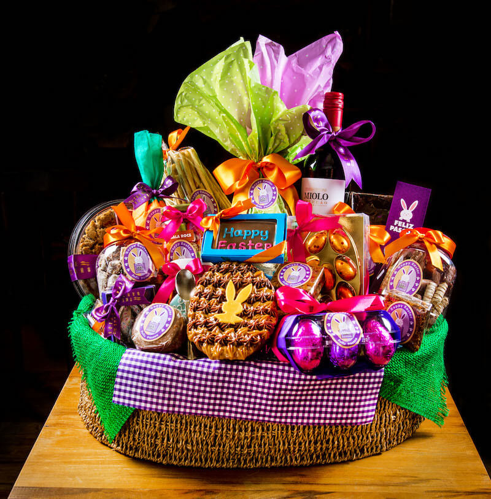
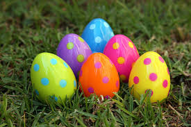
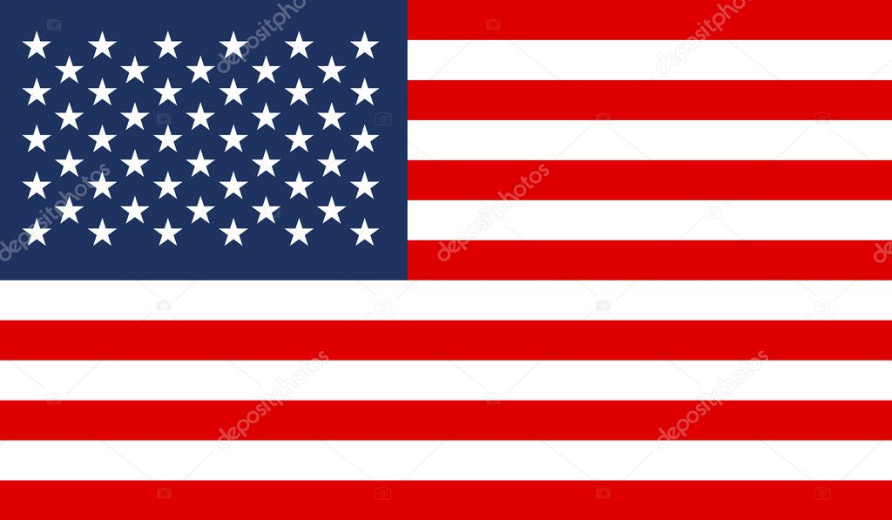

A Páscoa nos Estados Unidos é amplamente celebrada com um grande foco nas crianças e nas tradições folclóricas. Uma das figuras centrais é o "Easter Bunny" (Coelhinho da Páscoa), que, segundo a tradição, deixa cestas cheias de doces, chocolates e pequenos presentes para as crianças na manhã de domingo. Diferente do Brasil, onde o foco são os grandes ovos de chocolate, lá a preferência é por ovos menores, jujubas e marshmallows.
A tradição mais famosa é a "Easter Egg Hunt" (Caça aos Ovos). Pais, escolas e comunidades escondem ovos de plástico recheados com doces ou moedas em parques e jardins para as crianças procurarem. As famílias também costumam tingir e pintar ovos de galinha cozidos com cores vibrantes nos dias que antecedem a data, uma atividade clássica que reúne pais e filhos.
O evento de Páscoa mais emblemático do país é o "White House Easter Egg Roll" (Rolagem de Ovos da Casa Branca). Realizado anualmente no gramado da residência presidencial, o evento convida milhares de crianças para participar de corridas onde devem rolar ovos coloridos pela grama usando longas colheres de pau. É um dia de muita festa, leitura de livros e brincadeiras organizadas pelo Presidente e pela Primeira-Dama.

